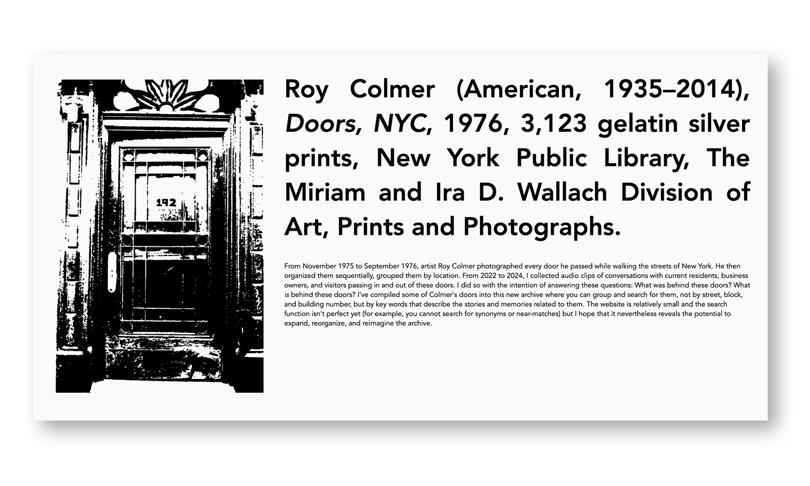
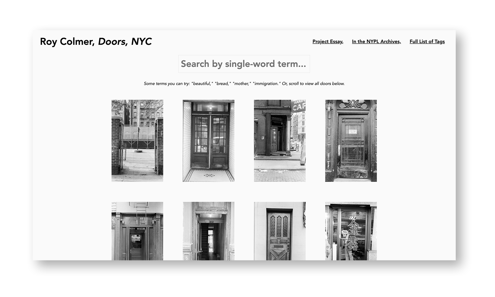

This was an oral history project that I completed as a creative assigment for a class on archive theory, investigating alternative ways of organizing and categorizing information. I created a simple image search function using alt text. Drawing on Roy Colmer's photo project, this project looks at the door as one possible "way in" to knowledge. And how might a website be akin to such a door? Though I chose to display the photographs in a grid, on a white ground (as they might be seen in a museum or a map) I also added a feature that displays the images randomly on the screen, to see what we might be able to experience outside of the dominating grid of modernity, urbanity, epistomology, coloniality, etc...
HTML, JAVASCRIPT, CSS, VERCEL
doorsnyc.vercel.web / code